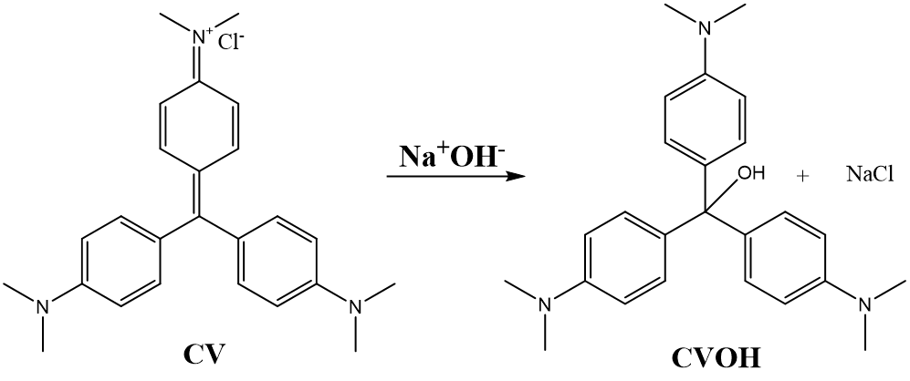

Table of Contents
After having completed this lab experiment, students will
Know:
Understand:
Do:
Chemistry: Atoms First from OpenStax, Print ISBN 1947172646, Digital ISBN 1947172638, chapter 17.
In this lab you will study the kinetics of the hydrolysis reaction of crystal violet with sodium hydroxide (NaOH). As the reaction proceeds, you will see the violet-colored reactant slowly change color as the colorless product forms. You will perform the reaction with different NaOH concentrations to determine the apparent (pseudo) and the true rate constants for this reaction.
TO DO before coming to the lab:
TO DO during the lab:
TO DO after the lab:
This lab grade is 23 points total. The breakdown for this lab is as follows.
| Labs | Points | Weight, % from the total lab grade | Due date |
| Kinetics | 23 | 11.5% | |
| Pre-Lab Quiz | 5 | Before the start of the lab | |
| Procedure Flowchart | 5 | Prepared before the start of the lab and submitted by the end of the lab day | |
| Data Sheet/Results | 10 | By the end of the lab day | |
| Preparedness & Professionalism grade | 3 | Assigned by your TA at the end of the lab |
Reactions can occur over a wide variety of time intervals. Some reactions are very slow. For example, it takes years for a copper roof to become green, forming basic copper carbonates and sulfates. Other reactions are very fast and almost instantaneous, such is acid-base reactions. The vast majority of reactions fall somewhere between these two extremes on the time scale. By studying the parameters affecting the rate of a reaction, chemists can find ways to speed up or slow down a reaction. The data generated during the kinetics experiments, such as reaction order, also allows us to elucidate the reaction mechanism and what the reaction pathways is. For example, if there are any intermediates, etc.
In this experiment, you will study the reaction of crystal violet with sodium hydroxide (NaOH).
Crystal violet, also called gentian violet, is a violet dye (Figure 1) with a wide range of antibacterial, antifungal and other medicinal properties. It is also used as a dye in textile industry and for staining gram positive bacteria (Figure 2).
Have you ever had your dental hygienist stain your teeth with a violet dye to show you whether the bacterial plaques are? They probably used the crystal violet dye!

Why are we interested in kinetics of crystal violet hydrolysis? Crystal violet is very toxic to aquatic organisms and should not be released to the waterways. Its use in textile and plastic industry produces large amounts of waste water contaminated with crystal violet (Salahudeen, N., Rasheed, A.A. Kinetics and thermodynamics of hydrolysis of crystal violet at ambient and below ambient temperatures. Sci Rep 10, 21929 (2020)). This waste water can be reused in the industrial processes if the color is removed. The removal of the residual crystal violet color can be achieved by treating the water waste with sodium hydroxide to hydrolyze crystal violet and to produce colorless product (Figure 3). It is important to know the kinetics of this reaction to design optimum waste treatment procedure.

We can simplify the scheme in Figure 3 to an abbreviated form:
The reaction rate of CV hydrolysis can be defined as changes in concertation of either reactants of products over time and represented by the following expression:
We can also express the reaction rate through the rate law that allows us to link the reaction rate to the concentrations of the reactants (provided
where:
\(k\) : rate constant for the reaction
\(m\) : order of the reaction with respect to the hydroxide ion (\(\ce{OH^-}\))
\(n\) : order of the reaction with respect to crystal violet (\(\ce{CV}\))
When we do kinetics experiments, we normally want to observe a change in concentrations of the reagents over time.
As crystal violet absorbs in the visible range (maximum absorbance at 590 nm), we can monitor the changes in its concentration over time by measuring its absorbance. Absorbance is proportional to the concentration of \(\ce{CV}\) (Beer's Law), and, if we know the absorption coefficient of CV, we can later convert the absorbance to the concentration of CV. However, we cannot easily monitor changes in concentrations of both CV and NaOH simultaneously.
If we use a very large concentration of hydroxide (for example 1000 times larger than the concentration of crystal violet) then [OH-] will not change appreciably during the reaction and thus we can assign [OH-]m as constant.
We can, therefore, re-write the equation 2 as
where:
The order of a reaction can only be determined experimentally. Often, chemists will hypothesize that a reaction has a particular order and then test the validity of that assumption but collecting the data on how the concentrations of the reactants change over time and then performing a mathematical analysis on it.
Once the order with respect to \(\ce{CV^}\) has been determined, you will also determine the rate constant (\(k\)) and order (\(m\)) with respect to NaOH for this reaction.
In this experiment, you will first perform the CV hydrolysis using three different concentrations of [OH-] and collect the absorbance of CV over time to test whether your data (changing concentration over time) fits best zero order, first order, or second order linear plots. The data processing will be performed during the Kinetics Data Processing lab where you will then assign the corresponding order based on which of the plots gives you the best linear fit, meaning which of the plots has the coefficient of determination R2 closest to 1.
If the reaction is zero order in \(\ce{CV^}\), then \(n = 0\) and:
If the reaction is first order in \(\ce{CV}\), then \(n = 1\) and:
If the reaction is second order in \(\ce{CV}\), then \(n = 2\) and:
The Arrhenius equation describes the dependance of the reaction rate constant on the reaction temperature
or we can re-write it in a logarithmic form as
If one can determine the reaction rate constant at different temperatures, then it is possible to calculate the activation energy of a reaction.
In this lab you will perform the CV hydrolysis at different temperatures while keeping the starting concertation of CV and NaOH constant in order to measure the reaction times and to further calculate the Ea during the Kinetics Data Processing lab.
| Item | Quantity |
|---|---|
| 100 mL beaker | 3 |
| 25 mL graduated cylinder | 1 |
| 250 mL beaker (for waste) | 1 |
| 400 mL beaker (for water bath) | 2 |
| analog thermometer | 2 |
| small clamp to hold a thermometer | 2 |
| graduated pipette, 2 mL | 1 |
| graduated pipette, 5 mL | 1 |
| pipette pump | 1 |
| test tube | 2 |
| test tube rack | 1 |
| timer (cell phone can also be used) | 2 |
|
Vernier interface |
1 |
| Pasteur pipette bulbs | |
| Pasteur pipettes | |
| colorimeter | 1 |
|
cuvette |
3 |
|
sharpie |
1 |
| Chemical | Quantity |
|---|---|
|
0.100 M sodium hydroxide, NaOH |
50 mL |
|
5.00 x 10-4 M crystal violet aqueous solution |
~12 drops in total |
|
distilled water |
Chemical Safety and SDS Sheets
Warning
Do the following step quickly!
4. Begin the reaction by adding 2-3 drops of the crystal violet solution to the cuvette with NaOH solution A, cap is with a lid and, holding the lid with your index finger, turn the cuvette upside down twice. Wipe off the outside of the cuvette with a Kimwipe and gently tap the cuvette if you need to get rid of any bubbles.
5. Place the cuvette in the colorimeter and check with absorbance of the CV on the right side of the screen. If it is more than 0.7 units, wait until it drops 0.7 and then press the  at the left bottom corner of the screen. Absorbance data will be collected for 5 minutes.
at the left bottom corner of the screen. Absorbance data will be collected for 5 minutes.
6. Ensure that the run has proceeded and then discard the waste from the run into the 500 mL waste beaker. Rinse the cuvette twice with a small amount of water, but do not dry it.
7. If the absorbance level drops below 0.1 before the run is over, you can manually stop the run by pressing on the red square button at the left bottom corner of the screen.
7. The linear dynamic range (when the absorbance is directly proportional to concentration) of the colorimeters is between 0.7 and 0.1 absorbance. We do not need to have all of the data points within that range but we want as many as we can between 0.7 and 0.1. If your absorbance is above 0.8 when you insert your cuvette, wait until it drops to 0.7 and press "Start". If the absorbance is above 0.7 for the final data point you should redo the trial. You do not need change your cuvette, simply press "Start" on the Vernier apparatus and run for another 5 minutes and you should have data in the valid range.
8. Save your run by pressing the  icon on the right side of the screen.
icon on the right side of the screen.
Saving
The Save step is crucial! If you do not save your data, you will not be able to retrieve your results for your report.
8. Repeat Steps 4-7 with solutions B and C.
9. On your Data Sheet, record NaOH concertation for each run# as well the time needed for absorbance to drop from 0.7 to 0.1.
 and then
and then  . The display should inform you if the e-mail was sent correctly.
. The display should inform you if the e-mail was sent correctly.Info
The e-mail will be sent by labs.chemistry@mcgill.ca; please ensure that it does not end up in your junk mail.
Dispose of the waste in your waste beaker to the appropriately labelled yellow waste container. Wash all the glassware and return to the bin.
\(OH^-\)
Yes, the rate of a reaction changes with temperature, it will increase as temperature increases.